Self-Sign Workflows
vScrawl supports several signing options, depending on your needs:
Simple Electronic Signature
This is the most common and straightforward signing option.
-
Upload a document → Sign Yourself.
-
Drop a signature field and annotations on the document.
-
Fill all the necessary annotations on the documents and click on the signature field.
-
You can use the Next Navigation Button (➜) on the bottom of the document to move from one annotation to another on the document.
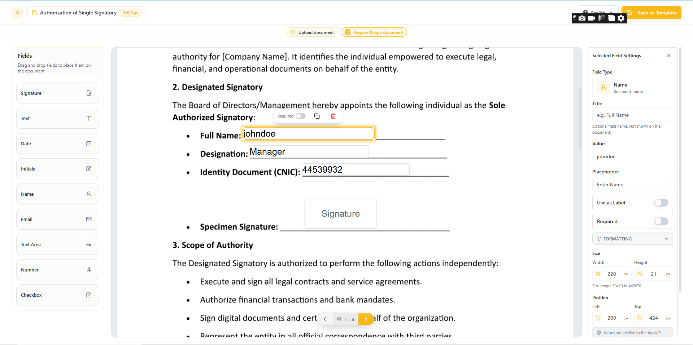
Field Requirements: Fields with the Required Toggle (Right Panel) set to Enabled must be filled to sign; otherwise, all fields are optional.
- For new users, you must choose how to create your signature: Upload an Image, Draw, or use Text.
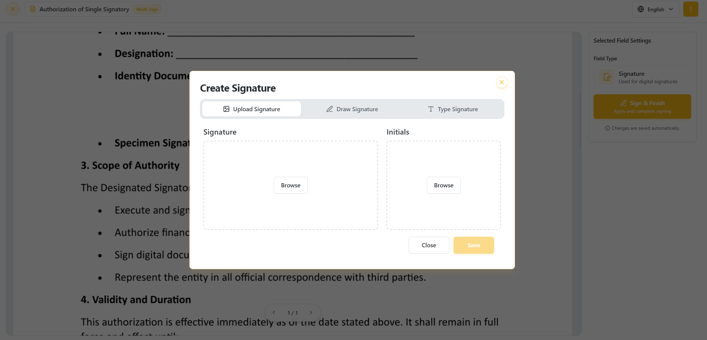
-
After completing all required annotations and signature fields, click the Sign & Finish button to finalize the signing process.
-
When completed, you will see the All Done notification.
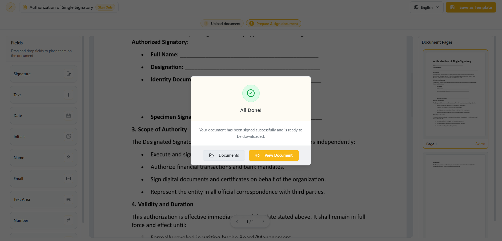
- When you click on the View button on the All Done notification. You can view your signatures along with the annotations on the document.
![[vscrawl-user-guide/docs/images/signed-document-ses-annotations.png|vScrawl Documents]]
- You can also access the Audit Report for a document by clicking the Audit Report button. The Audit Report provides a detailed history of the document workflow, including recipient actions, timestamps, status changes, IP addresses, and device information, helping maintain transparency and compliance throughout the signing process.
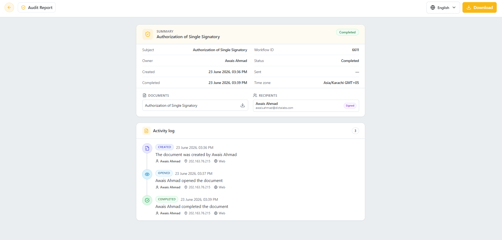
Digital Signatures
In vScrawl, digital signatures provide a secure, reliable, and legally compliant way to sign documents, ensuring authenticity and trust at every step. The platform supports both Advanced Electronic Signatures (AES) and Qualified Electronic Signatures (QES), offering flexibility depending on the level of assurance and compliance you require.
-
Upload a document → Sign Yourself
-
Drop a signature field and annotations on the document from the left-hand panel and select one of the Advanced Electronic Signature / Qualified Electronic Signature from the signature type drop down on right-hand panel.
-
Fill all the necessary annotations on the document.
-
Click on the Signature field or on the Sign button present on the right-hand panel.
-
Different Signing servers will appear after clicking on the signature field or sign button. You may choose one of these based on your preference. Let's explore these options one by one.
vScrawl Signing Server
- Choose the vScrawl Signing Server and enter your password.
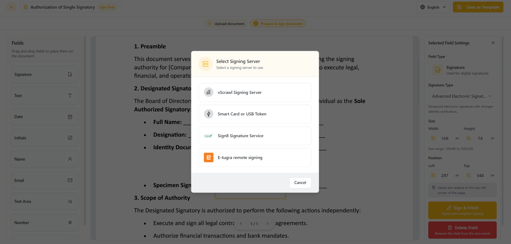
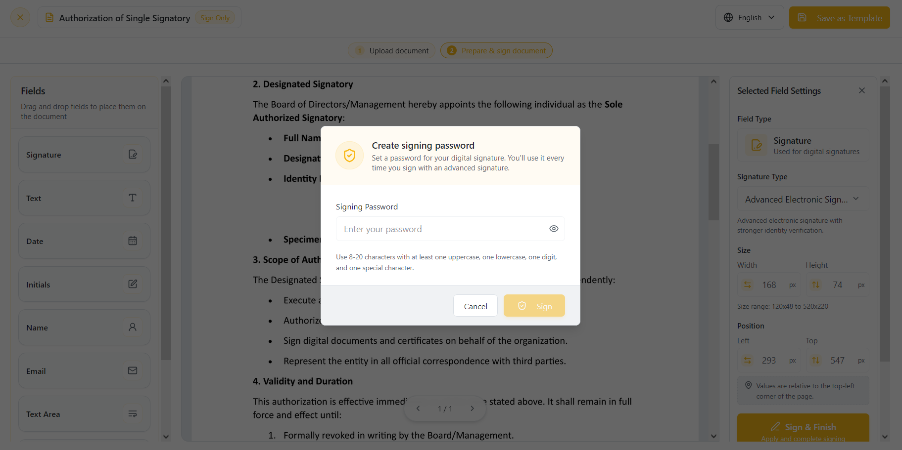
-
If you are signing up on vScrawl for the first time using Google Authentication or Keycloak, you will be asked to set up a password before you can use Advanced Signatures. This password will be linked to your account and required each time you apply an AES signature.
-
Now set up the password (It must be at least 8 characters long and contain at least one lowercase letter, one uppercase letter, one digit, and one special character) and click on the OK button.
-
The signing process will start and you will see progress (Loading Indicator) for the signing.
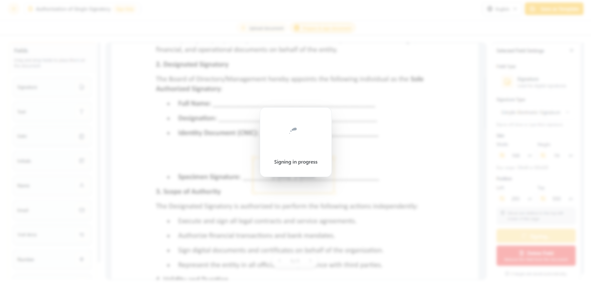
- When the process is completed, then the All Done notification will appear.
- Click on View button to see your signatures on the document and the document is signed.
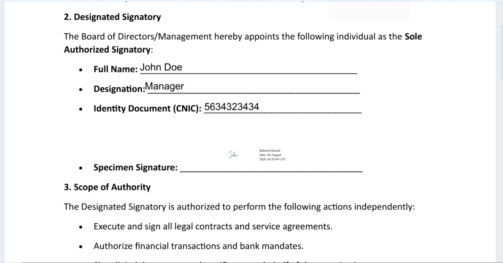
eTugra Remote Signatures Server
-
Choose the eTugra Remote Signatures Server option. Install the eTugra Auth mobile app from the Google Play Store or Apple App Store.
-
An authorization dialog box will open after clicking on eTugra Remote Signatures server.
-
Enter your email address in this credential authorization for user ID.
-
After entering your email address now click on proceed.
-
You will see the authorization request number being sent on your eTugra Auth mobile app.
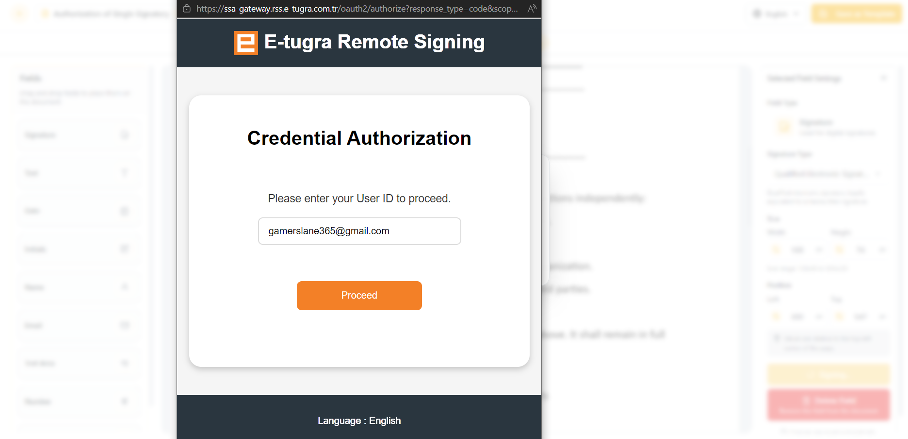
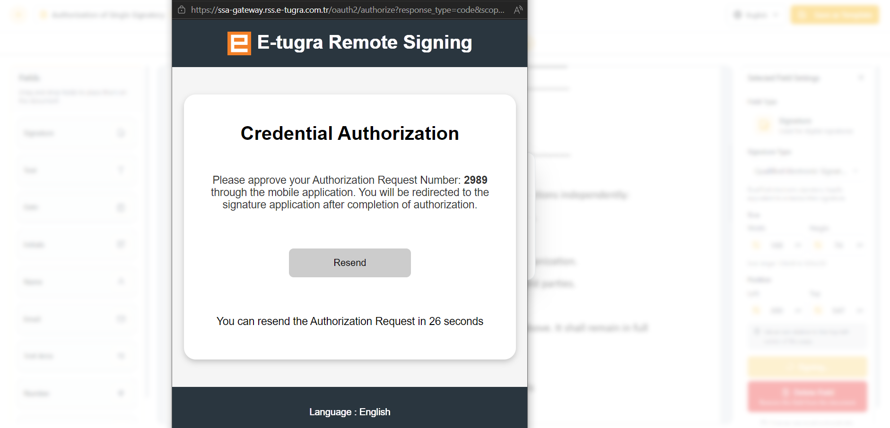
- Approve the request on your eTugra Auth mobile app.
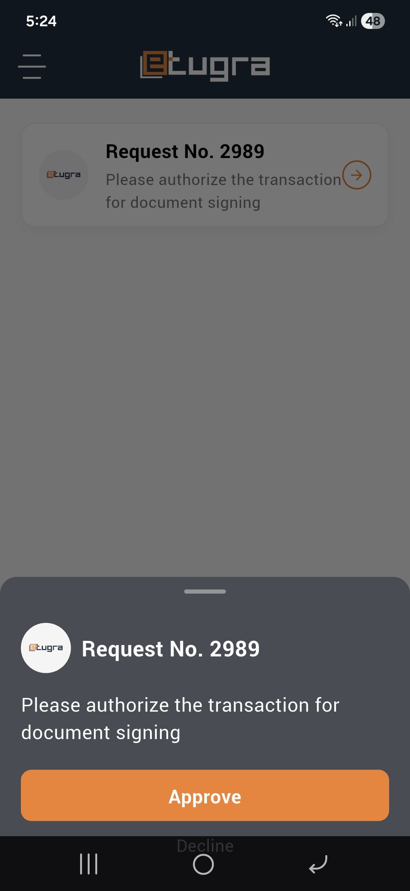
- After approving the request on eTugra Auth mobile app the process will be started for the Remote Signature and signature will be performed on the document.
Smart Card or USB Token
-
You can also perform the signing using the Smart Card or USB Token option.
-
To perform signing using Smart Card or USB Token make sure a smart card or a USB token is connected with your PC and then select the desired option.
-
Now for this you have to install SmartXipher app for desktop and your smart card or USB token drivers.
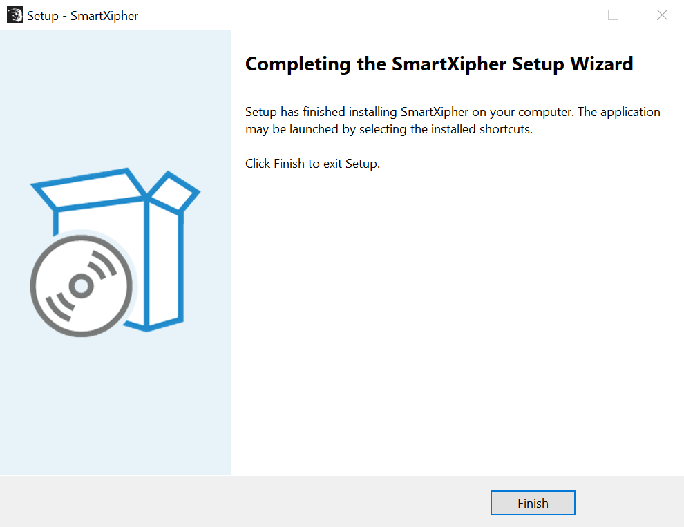
- When you select the “Smart Card or USB Token” option, the SmartXipher signing screen is displayed. The system verifies the user’s digital certificate through SmartXipher. Once the certificate is successfully validated, click the Sign button to complete the digital signing process.
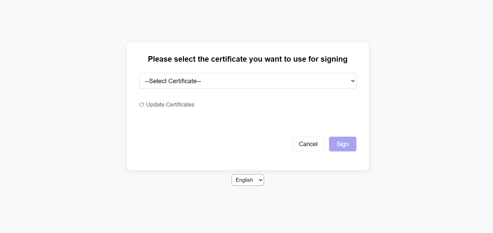
-
A dialog will appear from where choose the appropriate signing certificate. On the next dialog, enter the smart card or USB token password and the signing process will be completed.
-
Click on View button to see your signatures on the document and the document is signed.